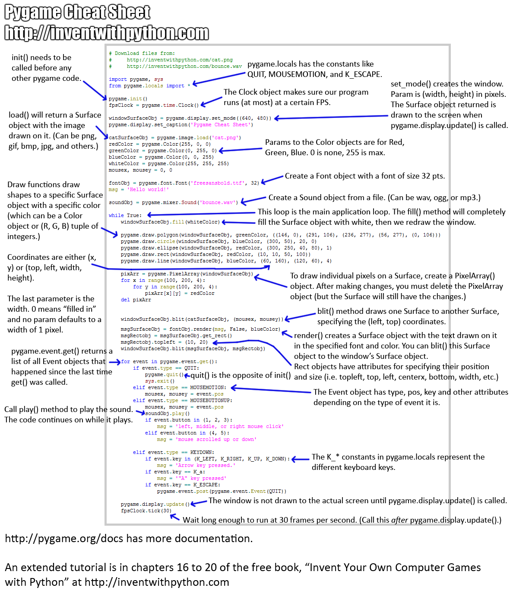

最后更新于：2022年6月25日 下午
疫情开始后不久，在苏铭和蓝莓带领下，开始学习 Python，下面是走过的坑，吐槽正式开始
Python 在代码书写上要求极高，所有很多时候代码复制过来报错。。还有代码区分空格和 Tab
Python 中，对象赋值本质上是对象的引用
不要把 Python 代码写成 C/C++ 的风格！同样 SageMath 的代码也不要迁就 Python
入门教程
下载好 Python 后有自带文档
Python 菜鸟教程 百度一下，你就知道。不行可以选择 必应
网易公开课，我选择的是南京大学的 Python 玩转数据，用手机 app 才能看，建议观看 1-25 集和 43-50 集。 1.5 倍速。
爬虫（下面示例）
Pygame 库的使用（PY 游戏，那也才刺激了吧 0.0）
100 天学会 Python 人脸识别
基本语法掌握了之后就要掌握类了，Python 的类挺有趣的，哈哈.类中写得变量是类的属性，而每个对象的属性要加 self. 的，然后方法里面的变量是方法内部临时变量。
pip freeze/list 查看所有安装了的包
PyPi ：Python Package Index 查看所有发布的包的索引。
例子 简单的终端 Python 程序 1 2 3 4 5 6 7 8 9 10 11 12 13 input ('苏铭的Python分数：' )if tmp.isdigit():int (tmp)if score > 100 :print ('我信了你的鬼话' )elif score >=60 :print ('可以呀苏铭' )else :print ('菜的呀苏铭' )else :print ('你输入的是什么鬼哦' )
简单的 GUI Python 程序 1 2 3 4 5 6 7 8 9 10 11 12 13 import wx class Frame1 (wx.Frame ):def __init__ (self, superior ):'Example' ,pos = (400 ,200 ),size=(350 ,500 ))'Hello' ,pos = (250 ,300 ))if __name__ == '__main__' :None )True )
素数筛 1 2 3 4 5 6 7 8 9 10 11 12 13 def initprime (n ):2 ==1 for x in range (n+1 )]1 ] = False ;isp[2 ]= True 2 ]for i in range (3 ,n+1 ,2 ):if isp[i]: p.append(i)for j in p:if (i*j<=n): isp[i*j] = False else : break if i%j == 0 : break return isp,pprint (initprime(100008 )[-1 ][-1 ])
爬虫 总结爬虫方法：
观察想要想要爬虫的网站中特定数据的网址，用 F12（适用于 Chorme, Edge 等）打开代码检查。找到数据对应的意义和名称
设计流程图和代码框架
Coding
本来就不会写，学习了 leetcode 上的代码后，制作了青春（阉割）版的爬取 lol 所有壁纸到当前文件夹的 lolIamge 文件夹中，代码如下
1 2 3 4 5 6 7 8 9 10 11 12 13 14 15 16 17 18 19 20 21 22 import osimport urllib.request as urlrequestdef getimage (heroID ):str (heroID)'https://game.gtimg.cn/images/lol/act/img/skin/big' + heroIdr'lolImage\\' + heroIdif not os.path.exists(heroDir): os.mkdir(heroDir)for i in range (100 ):'0' + str (i//10 ) + str (i%10 ) + '.jpg' try :except :break r'\\' + heroEndwith open (imageName, 'wb' ) as f:if not os.path.exists('lolImage' ):'lolImage' )for i in range (1 ,1000 ):
Python 处理字符串的 split 函数强的不行，给爬虫提供了特别便利的条件
1 2 3 4 5 6 7 from sklearn import tree 140 ,1 ], [130 ,1 ],[150 ,0 ],[170 ,0 ]]0 ,0 ,1 ,1 ]print (clf.predict([[160 ,0 ]]))
有需求再去这里学习吧：B 站视频 ，对应笔记
python 语法糖 因为 Python 的语法糖，代码简洁优美，越来越喜欢 Python 了（C++17 永远的神）。
人生苦短，请用 Python
四则运算不会溢出
乘方，排列组合数内置且不会溢出
支持 x,y = y,x 等简单操作
分号可用来分割，实现一行多句
函数返回值可以是元组，列表，甚至是函数
lambda 表达式
列表生成式 ， 三元操作符： [x//2 if x%2 == 0 else x for x in range(10)]
in, enumerate 在 for循环中使用列表，元组反向标号从 -1 开始数，不用担心越界
字符串的 split 和 join 方法，eval 计算器。
map 将一批数据同时用一个函数处理zip 把列表或元组打包argv 直接可用，不用再管 argc函数可变参数 *args（保存元组）, **kwargs（保存字典）
yield 和 yield from 做生成器reduce 函数计算列表内全部乘积等（需要 from functools import reduce）。exec 函数 执行 Python 文件中的代码。用 list 当函数参数实现传引用（指针）的功能
装饰器
带 * 赋值： a,*b,c = [1,3,4,5,6,3,6]
raise ValueError('error type...') 处理异常，哈哈Python 交互界面中：_ 返回的是最近一次的值
任意类有 __init__ 和 __repr__ 方法（不解释了，顾名思义）
运算符重载 ，运算符重载 2
我始终相信极简的代码，优美的代码才是正确的编程姿势。
Python 特征
内联表达式：[i**2 for i in range(10)]
exec 函数 执行 Python 代码（一般用于文件读取）元组（tuple）可以做加法和乘法来改变它的值！但是本质上元组的值并没有改变，只是新开了一段连续的内存，然后用刚刚那个指针指向了这段内存！！！所以元组是不可变的 这句话没毛病
一个元素构成的元组要写成(a,)形式，是因为否则到处都是元组 0.0（因为我们在处理优先级的时候经常加()）
上述说明了为什么内联表达式不支持用 tuple，用的是 list（列表）
生成器可以用 list and tuple，搞完生成器就空了
map(func,data) 一次算一堆的值。Python 中没有++,-- 这类自增自减运算
生成器表达式中, in 子句在声明时执行, 而条件子句则是在运行时执行
列表快速复制是浅复制
注意传列表等同转指针
深复制和浅复制 一定要细心list 自带的 copy 是浅 copy
打包成可执行文件（.exe） 最简单的方法： pip 安装 pyinstaller (借助豆瓣源，见安装段落)，然后执行
pyinstaller -F example.py -w
其中 -F 表示单个文件， -w 表示关闭命令行窗口
问题是，一个几 kb 的 Python 程序，打包就 10M+ 。。。这谁顶得住啊，解决方案
反解析和防止被反解析
datetime 包学习（哈哈哈） 1 2 3 4 import datetime2019 ,10 ,20 )print ('茶茶白喜欢茶茶子妹妹的第' +str (day.days)+'天' )
用 Python 写 Windows 关机程序 用 Python 的 Tkinter GUI 做一让用户输入指定文字（比如叫我爸爸 0.0 哈哈哈），否则关机的程序(只合适 Windows 用户)
Windows 关机命令 shutdown 在命令行窗口输入 help shutdown 可以看到详细的参数列表
用 Tkinter 创建出输入框 1 2 3 4 5 6 7 8 9 10 11 12 13 import tkinter as tkfrom tkinter.simpledialog import askstringimport os'shutdown -s -t 30' ) '' ,'白白是我爸爸' '输入：' + answer + '，否则在30s内关机！' while x != answer:'askstring' ,hint)if (x == answer): os.system('shutdown -a' )
用 pyinstaller 打包 pyinstaller -F baibai.py -w
就可以在 dist 文件夹中找到对应的 exe 文件了。然后发给小伙伴让 Ta 们叫你爸爸 0.0
虚拟环境 虚拟环境特别重要，因为各个软件对包的依赖不一样，如果没有虚拟环境一团乱麻。
python -m venv myvenv
然后每次执行 source myvenv/bin/active 即可开启虚拟环境，特别好用
装饰器示例 1 2 3 4 5 6 7 8 9 10 11 12 13 14 15 16 17 def log (func ):def wrapper (*arg, **kw ):print ('start %s' %func)return func(*arg, **kw)return wrapper@log def funcA (arg ):print (arg)def funB (arg ):print ('不带@的装饰器: ' ,end='' )print (arg)'xxxxx' )12 ))
看 log(funB(12)) 就知道了！因为 log 是 return 的是函数 wrapper ，然后 12 就作为 arg 传入了。
类中装饰器： 自带 @properity @staticmethod @classmethod python GUI
一定要先写逻辑代码，再写用户界面代码
GUI 的共性
好读不好写！！！，因为一看类名函数名就知道每行代码是干嘛的，但是因为大小写还有单词选择可选的很多， 所以一定要配置 代码补全！！！
其实任何语言的 GUI 都是类似的，基本就是使用操作系统提供的窗口 API 接口，然后就是时间响应机制，这样就导致了语言特点其实用的特别少，然后真正开发都是使用别人的引擎。
例如 C++ 开发就会用到 cocos2d， Unity 等（5 年前去游戏公司实习过），还有 MATLAB 的 GUI 开发是真的方便，框架设计特别简单，添加按钮什么的拖拽就可以了，还有就是添加响应函数的时候右键就可以自动帮你定位到要写响应函数的地方，简直就是神器。好了废话不多说了，学习 Python 的 GUI 设计，选的是 wxPython 和 pygame。学习两个库的一些基本操作，然后分别用两种包写拼图游戏。
wxPython 学习 先用 pip 安装 wxPython
pip install wxPython -i http://pypi.douban.com/simple/ --trusted-host pypi.douban.com
wxPython 官网 给了 hello World 两个简单示例
1 import wx; a=wx.App(); wx.Frame(None , title="Hello World" ).Show(); a.MainLoop()
一行代码做一个 GUI 界面，可能这就叫做人生苦短，请用 Python 吧！
推荐 wxPython 库查阅 和 键盘事件列表
pygame 学习 这一张图就够了感觉！

然后还有 ppt 以及库查询手册
拼图游戏开始了 本来是想用 wxPython 和 pygame 两种方式实现同一个拼图游戏，后来 wxPython 的编写（主要是函数查询）把我搞的生无可恋，就不想写 pygame 版本的实现了。下面是源码:
1 2 3 4 5 6 7 8 9 10 11 12 13 14 15 16 17 18 19 20 21 22 23 24 25 26 27 28 29 30 31 32 33 34 35 36 37 38 39 40 41 42 43 44 45 46 47 48 49 50 51 52 53 54 55 56 57 58 59 60 61 62 63 64 65 66 67 68 69 70 71 72 73 74 75 76 77 78 79 80 81 82 83 84 85 86 87 88 89 90 91 92 93 94 95 96 97 98 99 100 101 102 103 104 105 106 107 108 109 110 111 112 113 114 115 116 117 118 119 120 121 122 123 124 125 126 127 128 129 130 131 132 133 134 135 136 137 138 139 140 141 142 143 144 145 146 147 148 149 150 151 152 153 154 155 156 157 158 159 160 161 162 163 164 165 166 167 168 169 170 171 172 173 174 175 176 177 import wximport osimport base64from datetime import *from random import randintimport urllib.request as urlrequest import webbrowser import tkinter as tk from tkinter import filedialog from wx.lib.embeddedimage import PyEmbeddedImage class JigsawGame (wx.Frame ):def __init__ (self, *args, **kw ):super (JigsawGame, self).__init__(*args, **kw)False False for i in range (9 )] 8 20 , 521 ), \'欢迎来到我的博客:' , \180 , 521 ), \'izlyforever.com' )'pink' )2 710 , 20 ), \'操作：\n\n↑\n← ↓ →\n\n\nW\nA S D' , \'red' )200 , 200 ), \'鼠标点击空白处\n选择一个照片来玩拼图吧' , \16 'red' )def onleftdown (self, event ):if (not self.fileOpen):if os.path.basename(self.fileName).split('.' )[-1 ] in ['png' , 'jpg' , 'jpeg' , 'bmp' ]:True def onkeydown (self, event ):if (self.fileLoad and not self.isfinish()):ord ('A' ), wx.WXK_RIGHT, ord ('D' ), wx.WXK_UP, ord ('W' ), wx.WXK_DOWN, ord ('S' )]2 if (keycode in myKey) else -1 )def myfile (self ):return fileNamedef onlinefile (self ):'https://izlyforever.com/learnPython/yes.png' def writefile (self ):max (0.2 , sizeW/720 , sizeH/521 )+0.02 int (sizeW/t), int (sizeH/t)).ConvertToBitmap()3 ;sizeH //= 3 for i in range (8 ):3 )*sizeW, (i//3 )*sizeH, sizeW, sizeH))]255 , 255 , 255 , 1 )]2 *sizeW, 2 *sizeH, sizeW, sizeH))3 )*(sizeW +1 ), (x//3 )*(sizeH+1 )) for x in range (9 )]for i in range (9 )]def run (self ):if (not self.fileLoad):True def disorder (self ):for i in range (111 ): self.move(randint(0 , 3 ))def move (self, direction ):if direction == 0 : self.moveleft()elif direction == 1 : self.moveright()elif direction == 2 : self.moveup()elif direction == 3 : self.movedown()def checkmove (self, start, end ):if (end not in range (9 )): return False if (start%3 == 0 and end%3 == 2 ): return False if (start%3 == 2 and end%3 == 0 ): return False return True def moveleft (self ):if (self.checkmove(self.eB, self.eB+1 )): self.sbtnew(self.eB, self.eB+1 );self.eB+=1 def moveright (self ):if (self.checkmove(self.eB, self.eB-1 )): self.sbtnew(self.eB, self.eB-1 );self.eB-=1 def moveup (self ):if (self.checkmove(self.eB, self.eB+3 )): self.sbtnew(self.eB, self.eB+3 );self.eB+=3 def movedown (self ):if (self.checkmove(self.eB, self.eB-3 )): self.sbtnew(self.eB, self.eB-3 );self.eB-=3 def sbtnew (self, posB, posA ):def isfinish (self ):if self.order == [i for i in range (9 )]:8 ].SetBitmap(self.lastPart)500 , 300 ))return True else : return False if __name__ == '__main__' :2019 , 10 , 20 )None , \'茶茶白喜欢 zly 妹妹的第' +str (loveDays.days)+'天' , \800 , 600 ), \
wx.EVT_KEY_DOWN 不响应 Tab Enter → ↑ ↓ ←
wx.EVT_KEY_UP 响应所有键
wx.EVT_CHAR 仅响应F1 - F12 PrintScreen ScrollLock PauseBreak
wx.Button 和 wx.EVT_KEY_DOWN 等冲突让我懵逼了吐了
代码解释
首先创建窗口，窗口名是喜欢 zly 妹妹的第 xxx 天，日常表白 0.0
窗口上放一个面板（panel）然后在上面放很多静态文本，比如我的博客呀，还有操作提示
然后绑定监听鼠标左键，按下了就会让你选择一个文件来玩拼图游戏
然后选择好了图片后，把图片平均切成 3*3 的块，最后一块（右下角)用黑白填充
把这些块打乱，打乱方式是随机的移动（防止随便打乱拼不回去）
监听 键盘 WASD 和上下左右键并写好相应的响应函数
每次接受到监听就检测是否拼好
图片转字符串 我知乎上看到 怎么用 Python 把图片转化为字符？ 挺有趣的，自己也尝试了一下，当然他也是参考 这里
原理就是：将图片（位图）转化成灰度图，即 0~255 的数值，然后将这些数值换成特殊符号（自定义）
1 2 3 4 5 6 7 8 9 10 11 12 13 14 15 16 17 18 19 20 21 22 23 24 25 26 27 28 29 30 31 32 33 from PIL import Image'z' , 'l' , 'y' , '#' , '?' , '*' , '+' , ';' , ':' , ',' , '.' ]def resize (image, newW ):int (0.58 *h*newW/w))return newImgdef garytochar (grayImg,newW ):256 //len (chars) + 1 for i,data in enumerate (grayImg.getdata()):if (i%newW == 0 ): newPix.append('\n' )return '' .join(newPix)def imagetochar (imgPath, newW = 78 ):open (imgPath)'L' )return garytochar(grayImg,newW)if __name__ == '__main__' :import sys1 :3 ]+ [78 ]int (newW))print (charPix)
效果图
原始图片
字符图片
把图片变成数据 有时程序需要加载本地图片，然后打包的时候就很不方便，所以 wxPython 支持 img2png.py、img2py.py、img2xpm.py 等工具来支持这种操作，但是我调用的时候一直出错，在网上查了很多方式最后找到了解决方案：
1 2 3 4 5 6 import base64with open ('avatar.png' , 'rb' ) as f:print (pData)
这段代码就是把图片变成数据 bite。 相应的修改图片就可以换着用了，如果很多就批处理自己照样写。
然后在命令行执行
py imageToBite.py > a.txt
就可以把数据存下来，然后复制到下面程序的 data 中就行了。
然后在 wxPython 框架下
1 2 from wx.lib.embeddedimage import PyEmbeddedImage
就可以咯
堆 堆（heap ）是一种经典的数据结构，C++ STL 中优先队列 priority_queue 和 Python 中的 heapq 都是堆的一种实现。这里说明一下堆的原理和 heapq 的使用：
在我的这篇博客 中搜索 优先队列 可以看到堆的简单介绍。
（最小）堆是满足下面条件的二叉树
父节点小于等于子节点
用列表或者数组保存（这个也不是必须的，但一般都是这样做的）
堆根节点是最小的节点，堆的深度永远是 $O(\log n)$, 即是平衡的
支持的操作
插入一个元素： 将它放在最后面，向上更新 $O(\log n)$
删除最小的元素： 将最后的元素放在根节点，向下更新 $O(\log n)$
查看最小的元素（根节点）
将一个列表初始化： 将列表从根更新，然后依次递归更新 $O(n)$
从上述操作可知，堆可以用于 堆排序 ，整体复杂度 $O(n \log n)$
实现一个堆还是挺简单的，不过我们没必要再造轮子了
下面用例子看一下 Python 堆的使用
1 2 3 4 5 6 7 8 9 10 11 import randomimport heapqlist (range (10 ))print (x)3 )1 )2 )
Python 调用 C/CPP 之 ctypes 我开始想要用 Python + ctypes 满足自己的需求。由于 Windows 搞这个很麻烦，就在 Ubuntu 上搞了，不过我是在 WSL 上做的。
Python 调用 C 示例 ctypes 官方中文文档 中选择自己 Python 对应版本的文档。有很清晰的描述，然后在 Pythonlab.com 中很直观的例子：
1 2 3 4 5 6 7 8 9 10 int add_int (int num1, int num2) return num1 + num2;extern "C" int add_int (int num1,int num2) int add_int (int num1, int num2) return num1 + num2;
由于 C++ 支持函数重载功能，在编译时会更改函数名。
所以在函数声明时，前缀 extern "C" 则确保按 C 的方式编译。
然后把上面 add.c/add.cpp 编译成 .so 文件：
1 2 3 # For Linux
再调用就好了
1 2 3 4 5 6 7 8 from ctypes import *'./libadder.so' )4 ,5 )print ("Sum of 4 and 5 = " , res_int)
Python 调用自己写的 primepi C++ 函数
Python 调用自己写的 PrimePI 岂不美哉
1 2 3 4 5 6 7 8 9 10 11 12 13 14 15 16 17 18 19 20 21 22 23 24 25 26 27 28 29 30 31 32 33 34 35 36 37 38 39 40 41 42 43 44 45 46 47 48 49 50 51 52 53 54 55 56 57 58 59 60 61 62 63 64 65 66 67 68 69 typedef long long LL;const int N = 1e7 + 2 ;int p[N], pi[N];bool isp[N];#include <math.h> extern "C" {void init () LL primepi (LL x) ;int initprime () int cnt = 1 ;1 ] = 2 ;2 ] = true ;for (int i = 3 ; i < N; i += 2 ) isp[i] = true ;for (int i = 3 ; i < N; i += 2 ) {if (isp[i]) p[++cnt] = i;for (int j = 2 , t = (N - 1 ) / i + 1 ; j <= cnt && p[j] < t; ++j) {false ;if (i % p[j] == 0 ) break ;return cnt;const int M = 7 ;const int PM = 2 * 3 * 5 * 7 * 11 * 13 * 17 ;int phi[PM + 1 ][M + 1 ], sz[M + 1 ];void init () initprime ();2 ] = 1 ;for (int i = 3 ; i < N; ++i) {if (isp[i]) pi[i] = pi[i - 1 ] + 1 ;else pi[i] = pi[i - 1 ];0 ] = 1 ;for (int i = 0 ; i <= PM; ++i) phi[i][0 ] = i;for (int i = 1 ; i <= M; ++i) {1 ];for (int j = 1 ; j <= PM; ++j) {1 ] - phi[j / p[i]][i - 1 ];LL primepi (LL x) ;LL primephi (LL x, int s) {if (s <= M) return phi[x % sz[s]][s] + (x / sz[s]) * phi[sz[s]][s];if (x / p[s] <= p[s]) return primepi (x) - s + 1 ;if (x < N && x / p[s] / p[s] <= p[s]) {int s2x = pi[(int )(sqrt (x + 0.2 ))];LL (s2x + s - 2 ) * (s2x - s + 1 ) / 2 ;for (int i = s + 1 ; i <= s2x; ++i) {return ans;return primephi (x, s - 1 ) - primephi (x / p[s], s - 1 );LL primepi (LL x) {if (x < N) return pi[x];int ps2x = pi[int sqrt (x + 0.2 ))];int ps3x = pi[int cbrt (x + 0.2 ))];primephi (x, ps3x) + LL (ps2x + ps3x - 2 ) * (ps2x - ps3x + 1 ) / 2 ;for (int i = ps3x + 1 , ed = ps2x; i <= ed; ++i) {primepi (x / p[i]);return ans;
执行 g++ -fPIC -shared -o libprimepi.so primepi.cpp 后运行下面 Python 程序
1 2 3 4 5 6 from ctypes import *'./libprimepi.so' )print (c.primepi(9876543210 ))
C 中用 Python 老是提醒没有 Python.h，试了网上的方法，各种系统都不行服了。不过无所谓最在 C 中用 Python 啊
make 既然要混合编程了，哪必然要涉及到 makefile 了，于是我去 知乎
示例源代码
1 2 3 4 5 6 7 8 9 10 11 12 13 14 15 16 int main () printf ("hello world\n" );void fun1 () printf ("this is fun1\n" );void fun2 () printf ("this is fun2\n" );
示例 Makefile（注意 Makefile 一定要 Tab 缩进)
1 2 3 4 5 6 7 8 9 10 11 12 13 14 15 16 17 18 19 20 21 22 23 24 25 26 27 28 29 30 31 32 33 34 35 app: main.c fun1.c fun2.c app: main.o fun1.o fun2.o main.o: main.c fun1.o: fun1.c fun2.o: fun2.c $(target) : $(obj) $(CC) $(obj) -o $(target) %.o: %.c $(CC) -c $< -o $@ $(wildcard ./*.c) $(patsubst %.c, %.o, $(src) ) $(target) : $(obj) $(CC) $(obj) -o $(target) %.o: %.c $(CC) -c $< -o $@ .PHONY : cleanclean: $(obj) $(target)
其中 $ 自然是取值操作 % 是未定元的感觉，然后 wildcard, patsubst 从版本中就能看出。
$<：第一个依赖文件；$@：目标文件；$^：所有不重复的依赖文件，以空格分开。
依次执行 make -f makefilei 即可，最后 make (-f makefile 可省略), make clean 是最终版本
这里写的很详细
转义字符 转义字符在任何一种编程语言中都会提到（正则表达式也是）。写这篇博客的原因是，在 友链 Ray 的博客 中无意发现：
Python 自带的 shell 以及 SublimeText3 配置的环境 不支持 \b 和 \r
但是 C++ IDE 就支持，例如：Codeblocks
以下图表来自 百度百科
转义字符
意义
ASCII 码值（十进制）
\a响铃(BEL)
007
\b退格(BS) ，将当前位置移到前一列
008
\f换页(FF)，将当前位置移到下页开头
012
\n换行(LF) ，将当前位置移到下一行开头
010
\r回车(CR) ，将当前位置移到本行开头
013
\t水平制表(HT) （跳到下一个 TAB 位置）
009
\v垂直制表(VT)
011
\\代表一个反斜线字符 \
092
\’代表一个单引号（撇号）字符
039
\”代表一个双引号字符
034
\?代表一个问号
063
\0空字符(NUL)
000
\ddd1 到 3 位八进制数所代表的任意字符
三位八进制
\xhh十六进制所代表的任意字符
十六进制
注意： 转义字符与操作系统无关！
Python Shell 和无视 \r ,而 \b 会报错。
Sublime 的插件无视 \r ，\b 会被输出为: <0x08>
下面内容摘自百度百科 ：
回车 (\r) 本义是光标重新回到本行开头，r 代表 return ，控制字符可以写成 CR，即 Carriage Return\n) 本义是光标往下一行（不一定到下一行行首），n 代表 newline，控制字符可以写成 LF，即 Line Feed
在不同的操作系统这几个字符表现不同：\n 就表现为光标下一行并回到行首，\r 就表现为回到本行开头并往下一行，至于 ENTER 键的定义是与操作系统有关的。
自动控制 在知乎上看到 使用 Python 控制自己的电脑和键盘是一种什么样的体验？ 里面介绍的 pyautogui，于是在 pyautogui 官网 上查了一下，因为挺有趣的特此记录：
可以用来写一个 LOL 打人机拿首胜的脚本 0.0
安装 pyautogui pip install pyautogui -i https://pypi.tuna.tsinghua.edu.cn/simple
持续获取鼠标位置的示例 1 2 3 4 5 6 7 8 9 10 11 import pyautogui as pgprint ('Press Ctrl+C to quit.' )try :while True :'X: ' +str (x).rjust(4 )+ ' Y: ' +str (y).rjust(4 )print (positionStr, end = '' )print ('\b' * len (positionStr), end ='' , flush = True )except KeyboardInterrupt:print ('\n' )
退格 \b 也太好玩了
唯一新的东西就是 pg.position() 来获取鼠标位置
常用函数 1 2 3 4 5 6 7 8 9 10 11 12 13 14 15 16 17 18 19 20 21 22 23 24 25 26 27 28 29 30 31 32 33 34 35 36 import pg as pg1 'left' ) 'left' ) 'left' ) 'alt' )'tab' )'tab' )'alt' )'shift' )'left' ]*3 )'shift' )'ctrl' ,'c' )'ctrl' ,'v' )360 ,52 )'izlyforever.com' ,interval = 0.2 )'enter' )'' , title='' , button='OK' ) '' , title='' , buttons=['OK' , 'Cancel' ]) '' , title='' , default='' ) '' , title='' , default='' , mask='*' )
挂机玩 LOL (上述 pyautogui 被弃用了) 很遗憾，LOL 拦截了虚拟键盘操作（包括 pyautogui pywin32）
按键盒子 貌似可以解决（没试过）。最后我们需要驱动级的模拟按键：pywinio
键盘操作用pip install keyboard ： keyboard 示例 。
鼠标操作用pip install mouse： mouse 示例
mouse keyboard 两个项目是同一个人创建的，并且带有按键监听功能，持续更新，十分推荐。它的使用 github 上有，直接下面代码也能看懂。
设计者需要考虑
买装备 （装备栏要注意固定）
选择路线 （上中下随机，根据时间去具体的点）
如何攻击 （乱打）
何时回城
使用者操作步骤
打开英雄联盟 训练模式或简单人机，选好英雄（建议寒冰）
所有的东西恢复默认设置，装备栏左上角对齐
在命令行执行 py lolAuto.py
切到游戏界面
1 2 3 4 5 6 7 8 9 10 11 12 13 14 15 16 17 18 19 20 21 22 23 24 25 26 27 28 29 30 31 32 33 34 35 36 37 38 39 40 41 42 43 44 45 46 47 48 49 50 51 52 53 54 55 56 57 58 59 60 61 62 63 64 65 66 67 68 69 70 71 72 73 74 75 76 77 78 79 80 81 82 83 84 85 86 87 88 89 90 91 92 93 94 95 96 97 98 99 100 101 import keyboard as kbimport mouse as msfrom time import sleepfrom datetime import datetimefrom random import choicefrom random import randintimport osdef buyequipment (flag = True ):1 )'p' )0.5 )if (flag):for i in range (4 ):for j in range (3 ):196 -65 *j,695 -125 *i)0.12 )else :64 ,192 )0.5 )0.5 )'p' )def attack ():'a' )0.2 )0.2 )def skill ():'qwer' ))def upgradeskill ():'ctrl' )'ctrl' )def infield (road, direc ):0 ][direc]True ,0.2 )0.2 )'right' )'space' )28 )if (direc != 'mid' ): sleep(6 )'space' )def myexit (event ):if (event.name == 'k' ): os._exit(1 )try :print ('Welcome lolAuto designed by izlyforever' )print ('请先打开 LOL 进入游戏，恢复默认设置，\n 然后把买装备的界面左上角对齐 \n 再打开次应用' )print ('按 k 键 结束！' )10 )'top' :[1687 ,857 ],'mid' :[1776 ,944 ],'ad' :[1864 ,1034 ]}]'right' )'space' )960 ,540 )'right' )False )1 )'top' ,'mid' ,'ad' ])50 )while True :'space' )1920 + randint(-150 ,150 )1080 + randint(-80 ,80 )2 ,y//2 ,True ,0.2 )0.2 )'space' )if ((datetime.now()-timeS).seconds > 5 ):0.5 )if ((datetime.now()-timeE).seconds > 30 ):0 ][direc][0 ],road[0 ][direc][1 ])0.2 )'right' )4 )if ((datetime.now()-timeB).seconds > 240 ):'s' )'b' )8 )0.5 )except :print ('Bye lolAuto designed by izlyforever' )
因为没法知道自己在哪，所以写的很捞。还有就是这是全局的鼠标键盘操作，而不是针对 LOL 的，哎就这样吧。
pywinio 安装和使用 由于 pywinio 安装和使用贼搞人，在此写一下教程，先去 这里 下载源码，然后解压到：
C:\Users\Administrator\AppData\Local\Programs\Python\Python38\Lib\site-packages
打开 cmd 进入上述目录，依次安装 requirements_dev.txt 中的依赖包，然后 pip install -e ./pywinio-master 就安装成功了。
使用 ： 如果是 64 位操作系统（基本都是吧），管理员身份输入：
bcdedit.exe /set TESTSIGNING ON
1 2 3 import pywinioprint (g_winio.get_port_byte(0xA07 ))
运行上述代码，如果报错，可参考 这里
好不容易安装好了，然后我也不会用，后来也没用了，辣鸡…
pyechart 做 html 格式的折线图，直方图等等，可参考 简书